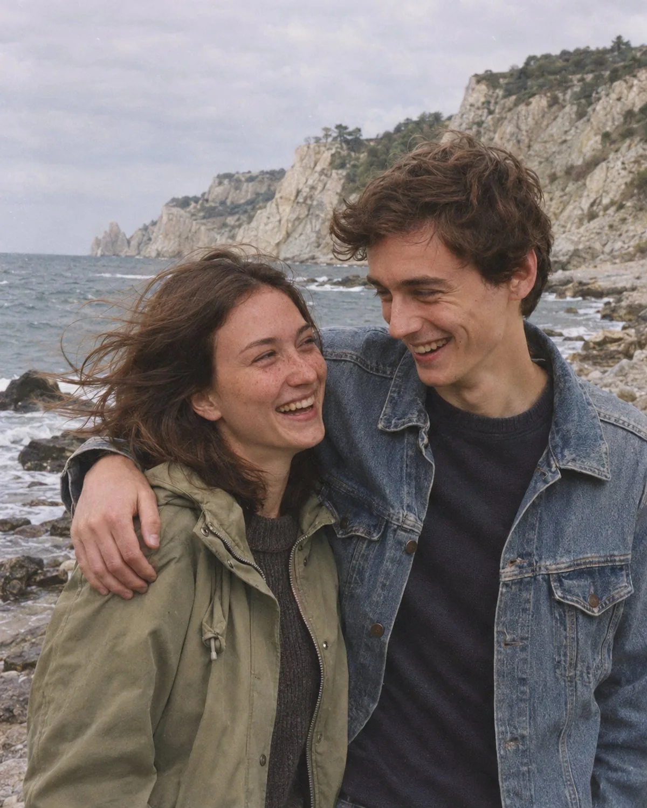

Содержимое подарка
Всё ваше
в одном сайте
Ваши фотографии, личные слова и голос близкого человека становятся историей, которую можно открыть в браузере по одной ссылке
Фотографии

Письмо
Спасибо за наши дни
За разговоры и поддержку
И за то, что ты рядом
Голос
В демо нет аудиозаписи. Здесь будет голос вашего близкого